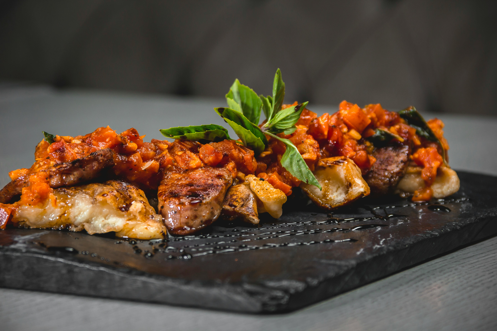
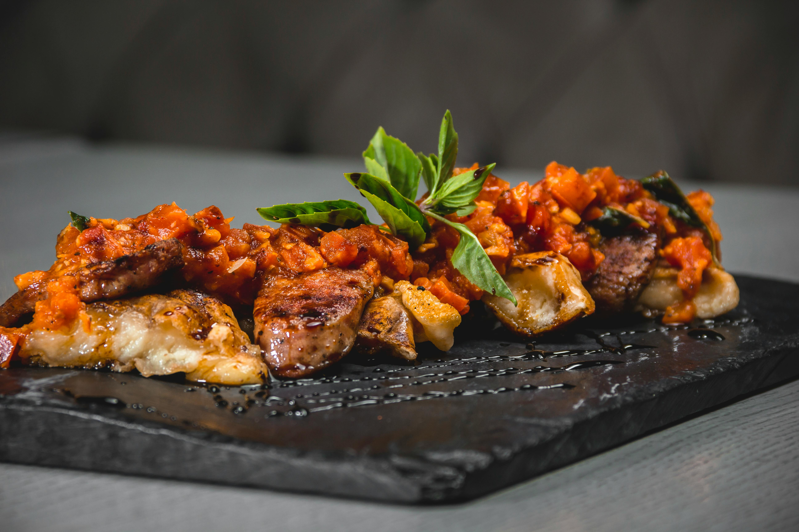

Über uns
Willkommen im Restaurant Elysian – Ein Ort für kulinarische Perfektion.
Inspiriert von der Eleganz der internationalen Haute Cuisine und bereichert durch moderne Akzente, kreieren wir einzigartige Momente für Sie.
Unser Team aus meisterhaften Köchinnen und Köchen verbindet Leidenschaft, Kreativität und höchste Präzision, um Gerichte zu zaubern, die auch im Herzen bleiben.
Dabei setzen wir auf die feinsten Zutaten, bevorzugt aus regionalem und nachhaltigem Anbau, um Ihnen das Beste zu bieten.
Ob für ein romantisches Dinner, ein wichtiges Geschäftsessen oder einen besonderen Anlass – das stilvolle Ambiente des Elysian lädt dazu ein,
den Alltag hinter sich zu lassen und die Kunst des Genießens in vollen Zügen auszukosten.
Wir freuen uns darauf, Sie bald bei uns willkommen zu heißen!
Restaurant Elysian – Wo Träume schmecken und Sterne funkeln.

 
